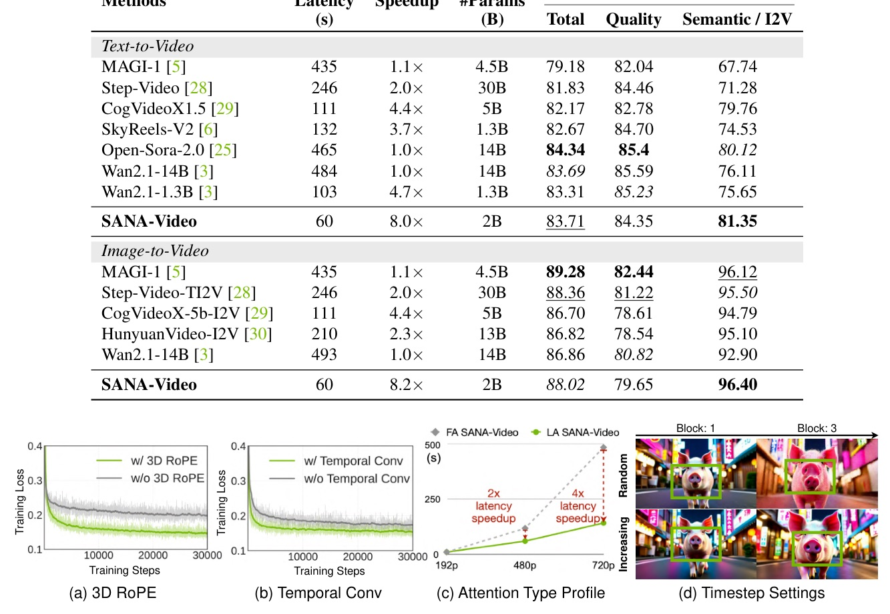
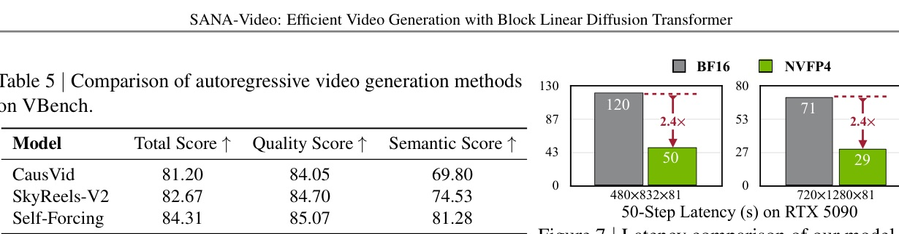

SANA-Video: Efficient Video Generation with Block Linear Diffusion Transformer
ICLR 2026 Oral · NVlabs/Sana · arXiv:2509.24695v2
把影片 DiT 的注意力從 quadratic global memory 換成 linear attention + constant-memory global cache。
SANA-Video 的核心不是單純小模型，而是讓 2B video DiT 在 720p / 長影片下仍維持可部署的速度與記憶體。
影片生成真正的瓶頸，是 token 數把 attention 壓垮
- 5 秒 720p 影片可超過 75,000 tokens；Wan 14B 在單張 H100 上需 32 min。
- 長影片若靠 vanilla attention + KV cache，memory / compute 會隨歷史長度成長；改 local window 又會丟 global context。
- SANA-Video 的目標很工程化：高解析、長影片、H100/RTX 5090 都要能跑，而不是只展示離線 sample。
小 2B 模型，但把速度曲線壓下來
- 720p 5s: SANA-Video-2B latency 36s, vs Wan2.1-14B 1897s and Wan2.2-5B 116s。
- 480p VBench: T2V Total 83.71, I2V Total 88.02；速度 60s。
- 部署: NVFP4 讓 RTX 5090 上 720p 5s 從 71s 降到 29s。
SANA-Video = Autoencoder + Rewriter + Linear DiT + long-video block cache

不是從零訓練：用 image DiT 當起點，逐步轉成 video DiT
- VAE adaptation: 480P 用 Wan-VAE；720P 用 DCAE-V；VAE adaptation 約 5-10k steps 收斂。
- Continue pre-training: 從 SANA T2I 權重初始化，新增 temporal modules 並 zero-init + skip connection。
- Autoregressive block training: 先訓 AR module，再用 improved self-forcing 處理 exposure bias。
RoPE 要放在 ReLU kernel 後，但 denominator 不能照抄
設計
- Linear attention 使用 ReLU kernel φ。
- 位置資訊用 RoPE(ReLU(x))，讓 attention map 更 local。
- Mix-FFN 追加 temporal 1D conv，補上 motion continuity。
穩定性
- 若 numerator / denominator 都 rotate，ReLU non-negative normalization 可能被破壞。
- 作者保留 numerator 的 RoPE，但 denominator 用未旋轉的 φ(Q), φ(K)。
- Fig.3(b) 顯示這能避免 QK sum loss 不穩。
Eq.2 的重點：positional numerator + positive denominator
- 這不是單純把 vanilla attention 換成 linear attention；RoPE 的位置會影響訓練是否穩定。
- 對 video DiT 來說，locality 與 stability 同時要保住：前者靠 RoPE-after-ReLU，後者靠 denominator 修正。
真正漂亮的地方：global context，但 cache 不隨影片變長
Full / local attention 的取捨
- Causal full attention: cache 與 per-token compute 都隨 N 成長。
- Causal local attention: 固定 window，但犧牲遠距 global context。
Block linear attention 的路徑
- 保存累積 attention state ΣS 與 key sum Σφ(K)T。
- 新 block 只需更新 state；memory 是 O(D2) 而非 O(ND)。
- 所以長影片可以保留 global memory。
Figure 4: attention cache 與 causal Mix-FFN 都要 block-wise

Monotonic SNR sampler + self-forcing：讓長影片訓練更像推論
- Monotonically increasing SNR sampler: 隨機選一個 block 用 SNR sampler，其餘 block timestep 透過 propagated probability 單調增加。
- 這比完全 random timesteps 有更小 sampling space，也讓每個 block 都有足夠資訊。
- Improved self-forcing: 利用 constant-memory global cache 生成更長條件（例如 1 min），減少 training/inference mismatch。
- 4-step LongSANA 報告可在 H100 上 35s 生成 1-min 16FPS 480P，約 27 FPS generation speed。
720p 的另一半答案：更深壓縮，但 latent 要對 2B DiT 友善
DCAE-V 設定
- Spatial down-sampling F=32，temporal factor T=4，channels C=32。
- 32 latent channels 對齊 pre-trained T2I model，利於快速 adaptation。
相對 Wan2.2-VAE
- 同等壓縮下，Wan2.2 需要預測 192 latent dims；DCAE-V 只需 32。
- 作者認為這對小 diffusion model 更容易。
資料不是只堆量：SANA-Video 明確過濾 motion / aesthetic / saturation

- Scene cut: PySceneDetect + FFmpeg。
- Motion: Unimatch optical flow + VMAF，保留 moderate and clear motion。
- Aesthetic / saturation: DOVER + OpenCV；SFT 約 5,000 human-preferred videos。
720p 5s：36 秒，且 Total score 不是用崩品質換來
| Method | Latency | Total | Quality | Semantic |
|---|---|---|---|---|
| Wan-2.1-14B | 1897s | 83.73 | 85.77 | 75.58 |
| Wan-2.1-1.3B | 400s | 83.38 | 85.67 | 74.22 |
| Wan-2.2-5B | 116s | 83.28 | 85.03 | 76.28 |
| SANA-Video-2B | 36s | 84.05 | 84.63 | 81.73 |
Latency on H100 GPU; 720x1280x81 resolution videos.
在 T2V / I2V 上，速度優勢很明顯，semantic alignment 也很強
| Task | Method | Latency | Params | Total | Semantic/I2V |
|---|---|---|---|---|---|
| T2V | Open-Sora-2.0 | 465s | 14B | 84.34 | 80.12 |
| T2V | Wan2.1-1.3B | 103s | 1.3B | 83.31 | 75.65 |
| T2V | SANA-Video | 60s | 2B | 83.71 | 81.35 |
| I2V | Wan2.1-14B | 493s | 14B | 86.86 | 92.90 |
| I2V | SANA-Video | 60s | 2B | 88.02 | 96.40 |
Ablation 支撐的是機制：RoPE、temporal conv、linear attention 都有角色

- 3D RoPE 與 temporal convolution 都讓 training loss 更低。
- Linear attention 在 480P 約 2x speedup，在 720P 約 4x speedup。
- Monotonically increasing timestep sampling 改善 blocks 間 consistency。
長影片不是全面贏，但在效率敘事下已接近 Self-Forcing
| Model | Total | Quality | Semantic |
|---|---|---|---|
| CausVid | 81.20 | 84.05 | 69.80 |
| SkyReels-V2 | 82.67 | 84.70 | 74.53 |
| Self-Forcing | 84.31 | 85.07 | 81.28 |
| SANA-Video | 83.70 | 84.43 | 80.78 |
NVFP4 部署：只量化關鍵投影，避開容易累積錯誤的層

- 量化 self-attention 的 QKV/output projections、cross-attention 的 query/output projections、FFN 的 1x1 conv。
- Normalization、temporal conv、cross-attention KV projections 保持高精度。
- 720p 5s latency: 71s -> 29s on single RTX 5090。
這篇不是所有品質指標都贏，而是 efficiency frontier 的推進
- 720p Table 2: SANA-Video Total / Semantic 亮眼，但 Quality 84.63 低於 Wan2.1-14B 的 85.77。
- 480p T2V Table 4: Total 83.71 仍低於 Open-Sora-2.0 的 84.34。
- Long video Table 5: Self-Forcing 的 Total / Quality / Semantic 都略高。
- 完整效果依賴 data filtering、DCAE-V、training schedule 與選擇性 quantization；不是只換 attention 就能複現。
如果你在做 video / world model，這篇值得看的不是 sample，而是 state compression design。
Linear attention 的價值在這裡不是抽象的 O(N)，而是讓 long-context generation 有可累加、可部署、可量化的系統形狀。
原文螢光筆：fixed memory 的承諾
“Linear attention is more efficient for video generation and our block linear attention maintains a fixed memory requirement for long videos.”
線性注意力讓影片生成更有效率，而 block linear attention 讓長影片保持固定記憶體需求。Fig.1 caption p.1
“as long as the cumulative sum of state ... and the cumulative sum of keys ... are stored... the memory cost is only O(D²) in total.”
只要保存累積 state 與 key sum，cache 記憶體就不再隨影片長度成長，而是 O(D²)。Eq.3 discussion p.5
原文螢光筆：速度與部署
“SANA-Video can generate a 720P 5s video within just 36 seconds, which is a 53x acceleration over Wan2.1-14B.”
SANA-Video 以 36 秒產生 720P 5 秒影片，相對 Wan2.1-14B 達 53x 加速。§3.4 p.7 / Tab.2 p.7
“This strategy reduces the end-to-end generation time for a 720p 5-second video from 71 s to 29 s on a single RTX 5090 GPU.”
NVFP4 部署把單張 RTX 5090 上 720p 5 秒影片生成從 71 秒降到 29 秒。§5 p.10 / Fig.7 p.10
Tomorrow
週一輪轉：LLM（架構、訓練、對齊）